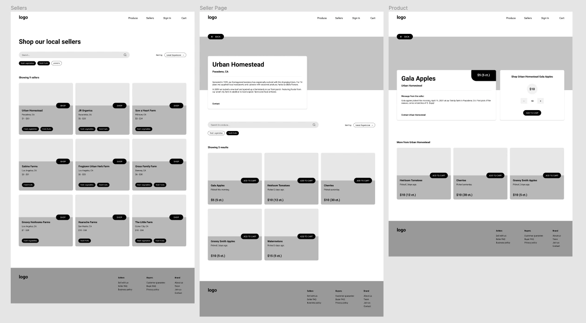
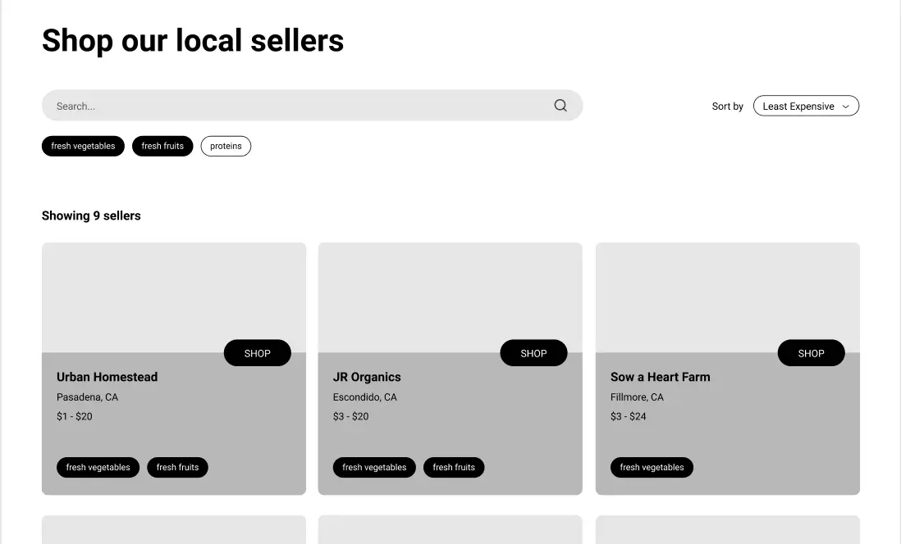
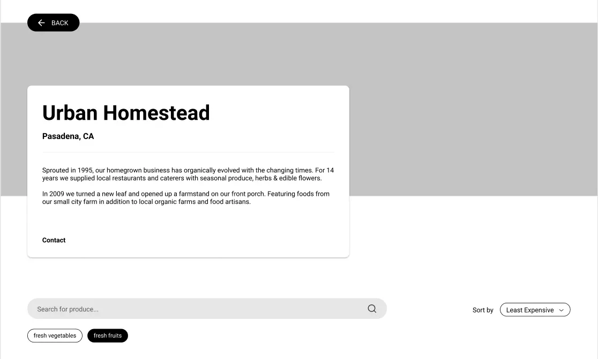
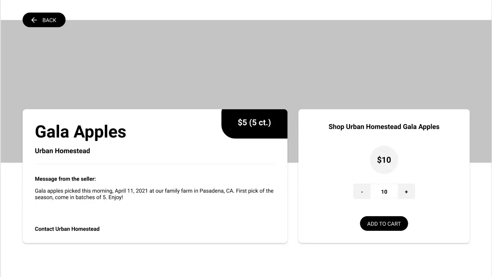
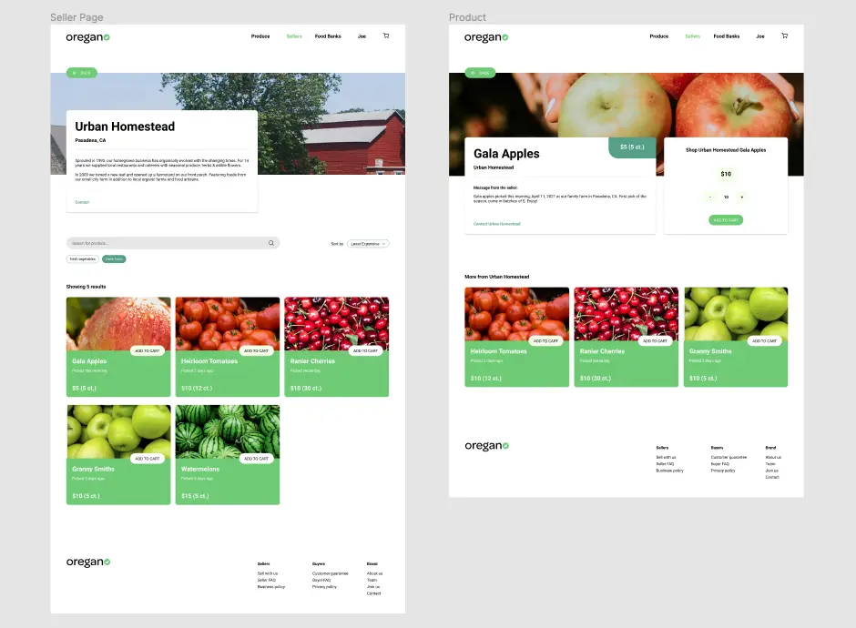

imagining a digital farmers market @ ucla designathon
overview
In Apr. 2021, I spent 24 hours with two other designers putting together a project for a designathon at UCLA. Our task: Look forward to the Los Angeles of 2030 and think about ways to keep our city and its resources sustainable for the next 10 years.
problem
Food deserts are areas where residents live over a mile away from the nearest grocery store, and where many don't have easy access to transportation. One of the most important issues is an inability to acquire nutritious foods like fresh produce. How can we bring healthy groceries to residents in food desert areas in a way that's also sustainable in the long run?
step 1: research & brainstorm
My teammates and I started with a brainstorming and research session. Our main takeaways were:
- 🌱 A major issue in food deserts is being unable to access fresh fruits and fresh vegetables.
- 🌱 Transportation issues like low car ownership isolate food desert residents from quality grocery options - instead, they're limited to smaller selections.
- 🌱 The LA area is home to a large number of local growers, including many family farms that specialize in selling fresh produce.
Based on these findings, we came up with oregano. We wanted to create a website where LA residents would be connected with LA-grown produce. Growers would be able to sell their products on our site, while buyers would be able to purchase fresh fruits and vegetables and get them delivered to their door. We hoped to address a few things:
- 🌱 Bringing homegrown produce to residents to offer them cheaper and healthier options.
- 🌱 Incorporating a delivery offering to reduce the friction of lack of transportation.
- 🌱 Encouraging residents to buy locally to promote environmentally and economically sustainable long-term growth.
step 2: wireframing
After working on a rough flow chart together, we started wireframing. While my teammates tackled the cart and checkout views, I worked on the pages showing oregano's sellers and produce.
While researching, my teammate found that a main attraction of buying local is talking to and getting to know the grower. We decided to put growers front and center, hoping to simulate the in-person experience of meeting a local seller in our digital environment.
We wanted to prioritize growers' stories and give them space to introduce their produce as in a real farmer's market, instead of impersonally pushing their products onto buyers. To do so, we placed bios and messages from sellers higher in the visual hierarchy.
 step 3: visuals
While I finished up my wireframes, my teammates got started on color and logo design. I tackled the one-seller page and the produce view in high-fidelity, using the color styles my teammates decided on to create a welcoming, fresh atmosphere.
conclusion
After the 24-hour designathon, my team and I were left with many more considerations that would guide oregano if we were to continue the project. For example, how can we keep prices low when we have to account for both seller's prices and delivery service? Additionally, what visual changes can we make to make oregano's design more accessible?
I had a lot of fun not only working with new teammates on a strict timeline, but also learning about food deserts and locally-grown produce, both of which I had limited knowledge of beforehand. I'm eager to do some personal reading about food access and sustainable grocery shopping.
back to homepage